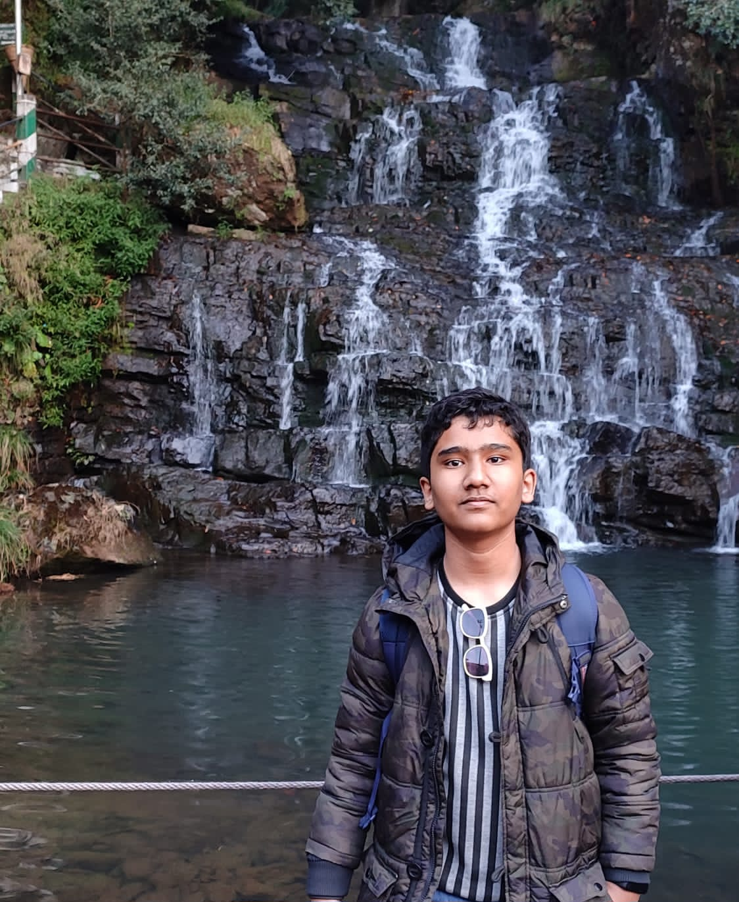

My first ever international tripI never had much opportunity to do international trips compared to some of my friends and classmates who have visited like 3-6 countries in their lifetime. I only had one international trip my entire life which was to India. Specifically to Shillong in Meghalaya. I visited India in 2023 and I was still living in Bangladesh at that time. My parents, mostly my dad, have done multiple international trips before 2023. My dad has like 15 different countries in his travel history but I didn't get the opportunity for international travel ever. Mostly because of my dad's career which barely lets him have free time. Most of his international trips was because of his work. Still, I used to ask my dad frequently about if he is ever going to take us to a trip outside of Bangladesh. In December 2022, he decides that he finally will. We applied for a visa and submitted our passports to the Indian Visa Application Center in Dhaka around the start of December 2022 and received our passports back with the visa at the end of December 2022. We then decided to visit India at the start of January 2023. I can't lie, I genuinely thought we would be visiting somewhere like New Delhi, Mumbai, Amritsar, Kerala or even Kolkata. But my dad decides to take us to a mountain city named Shillong located in the state of Meghalaya. Shillong probably does have an airport but it probably doesn't have any international flights. As a result, we decide to go there in a car. Along with us was a friend of my dad who has visited Shillong multiple times and was pretty much like our travel guide. I think it was my dad's friend who rented a minivan which would drop us to the Bangladesh-India border and then we would have to walk to the immigration center where they would stamp our passports and then we rent another car which would take us from Shillong. After crossing the border, getting our passports stamped, we came across cars which were sitting there to take passengers coming from Bangladesh. I saw these cars and the first thing that I notice is, they all are compact cars. Most of them are Maruti Suzuki. Barely any Toyotas or anything else. But I guess as they were all meant to drive on mountains, a compact car makes sense. We had a lot of struggle finding a car with drivers asking for a very high price. After about half an hour, we finally get a driver which asked for a normal price. His car was compact aswell and it was hard to sit on it comfortably. Anyways, it took about 3 hours to reach Shillong from the border. We stopped at a tea stall and it was almost sunset time and the view from that tea stall was amazing. We stopped for about half an hour then continued our trip to Shillong. It was night time and cold when we reached Shillong. It was the time of winter when we visited but I didn't know Shillong would be much colder. In Bangladesh, when it is sunny, I could survive with only a full sleeve shirt. But in Shillong, I had to wear a jacket too in a sunny weather. Makes sense though. It's an area on the mountains and so the winds are colder and stronger. We were searching for hotels and they were all definitely asking for high prices. We bargained and got ourselves to a hotel which was...ghetto. Yeah, ghetto. We didn't even have any options and it was night time already. My dad's friend takes a cheaper room and we take a bit more of an expensive room because the cheaper one was obviously smaller. We get inside the hotel room and it was a mess. Room looks a bit dirty, there is a tv which is just running random news channels which I don't even know. There is one window which is I guess blocked by something and so no view of the outside. Absolutely zero. The washroom looks kinda disgusting. After getting to our room and putting our stuff, we decide to go outside for dinner. Finding a restaurant was definitely a stress. Why? Because most of these restaurants serve non-halal foods. My dad's friend didn't have a problem because he isn't Muslim but it was a problem for us. We finally found a restaurant and I think we had rice, some veggies and daal and a papadam (thin, crisp and a crackling Indian flatbread) on the side. I can't really remember. Whatever, it was alright anyways. Next morning we wake up and went to the streets to do our breakfast. Well, we were doing breakfasts from stalls on the streets every morning for the rest of our trip. Breakfast menu was simple but it was good. It was some type of a flatbread which my dad's friend was saying that it's "luchi" but I didn't really bother asking a local about the name. Then, there was some veggies on the side and after this meal, we had chai. Our trip in India was for 3 days (5 January - 8 January). Before I start telling about all the places we visited, let me say a bit about some stuff like hotels and foods. From the night of January 5th till the morning of January 7th, we stayed at the hotel which we booked after reaching Shillong. It was Hotel City View Inn. The staff are probably one of the most unprofessional staff I have ever seen at a hotel. They are literally playing games on their phones during work time. They don't even care about who is coming in and who is leaving. Anyways, on the morning of January 7th, before we left for breakfast, all of a sudden a staff comes to our door and says that we can't stay here anymore because somebody booked this room before us and they are checking in today. Everyone. Literally everyone is mad. We ask the staff that when we booked this room, why didn't he tell us about someone else that booked this room before us? All he probably said was "sorry". Then, we pack our bags and go on a search for a new hotel and I think about an hour later, we found one. This one was owned by a Bengali guy who was a nice and chill guy. We booked a room in his hotel and then went and did our breakfast for the day. Pretty bad start to a day but this hotel was actually nicer than the one we booked before. Rooms were cleaner, there was a view from the window, staffs were kind of professional. Hotel didn't look ghetto. About the food. I think it was the next day, January 6th, we had to find a restaurant which had halal food because... come on man. Who wants to stick to eating veggies? Anyways, after a bit of a search, we find a restaurant which was probably owned by a Bengali, I can't remember but finally it was a halal restaurant. We had the same menu for lunch and dinner (rice, some veggies, lentils, chicken, beef {I think if you ask them for it} and a papadam on the side. It was ok but it was food. No need to find a restaurant anymore so we didn't have a problem. Alright, now let's get back to the places we visited. We started our visit with the Cathedral of Mary Help of Christians Church which looks amazing and it is blue in color although when we went there, there was someone's wedding going on. We visited the Elephant falls, Lady Hydari Park, Ward's Lake and Mawlynnong. Every single place looks aesthetic as hell. The places we visited were definitely aesthetic but not the stuff behind the scenes like hotels and foods but whatever. Oh by the way, here's a picture of me in Shillong:  |